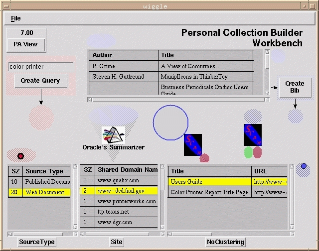

|
Steve B. Cousins
Our interface is based on scenarios and published studies of library use. The most important lesson is that library use is part of a larger task context [1]. Library users have goals that they want to achieve, and individual library activities are only important as a means of achieving those goals. Another lesson is that the problem is often not solved in a single session. Studies of library use almost uniformly conclude that systems should save result sets automatically for use later [3, 4]. Finally, there is much more to digital libraries than search. Libraries, and especially digital libraries, are made up of many services. They range from search and retrieval, to services that help us understand what we have found, to mechanisms that help us manage our results, to services that help us pass on our newly-acquired conclusions to others.
A larger task would be a professor preparing a course. Her work would involve accessing materials in the digital library, and potentially adding new materials such as an annotated bibliography or a syllabus, which other professors could access. This task might be divided into sub-tasks for the various topics covered in the course. A digital library interface needs to provide affordances for the various components of each task. Each instance of a task should persist across time, since the task is unlikely to be completed in a single session. Based on our reading of library-use studies, we believe that user tasks require a tool that falls between a "scrapbook" and a completely-automated, custom application.
Since user tasks involve an increasingly rich variety of services, our next goal is to design the interface to integrate the results from a broad array of services. In our example of the professor teaching a course, relevant services include document summarization, bibliography creation, and "sense- making" (understanding the results of broad searches). We use the term "service" to refer to computational objects that take digital library objects, such as documents, queries, and collections, as input. We are working with a list of about 30 types of services, ranging from complex information visualization services to (conceptually) straightforward translation services.
Library services differ widely in the amount of time they require, so another goal is to design the interface to handle widely varying time scales. The interface needs to let the user know before initiating a service whether it will take milliseconds or hours to complete. While a service is working, the interface needs to provide feedback on the progress of the service, and a means for interrupting the service. If the user has moved on to another task, the interface should continue to accept results from running services and compile them into a meaningful form for when the user returns to this task.
Our next goal is to make the system extensible. The number of available services is constantly growing. Ideally, adding a new service to a task needs to be as easy as dropping a "service card" onto the interface for a task. The service card would describe the parameters needed to invoke the service. It would either contain the service (for example as a Java applet) or would point to a network object that would perform the service. When appropriate, it would also include a fee schedule. Service cards would be exchanged via electronic mail or retrieved from catalogs of services.
Finally, the interface needs to support sharing and reuse of information processing knowledge. Bonnie Nardi has described how "local developers" of spreadsheet macros pop up in many different organizations [2]. We expect that with a well-designed task-based interface, individuals could share expertise in informal and semi-formal ways. An individual who spent a lot of time configuring her "color printer" research task might want to share that with a colleague who is looking to buy a new ethernet card. More formally, a digital librarian's job description could include the creation of specialized task templates for use by his patrons. Task representations also facilitate reuse by an individual, and could be used to manage a history of digital library activities.
In the next section we describe how our prototype digital library interface attempts to achieve these goals. We emphasize the interface issues that the goals raise, and ignore other issues due to space considerations.

Our current prototype provides an interface to the InfoBus search services and to services for sense-making, for summarizing documents, for doing copy detection and for creating bibliographies from collections of document descriptions. The figure shows the interface instantiated for a demonstration task based on the scenario of a professor teaching a course.
Librarians from our project like the task-orientation, but caution us that the real world is a messy place. As the interface prototype and the digital library testbed become more robust, we will be performing user testing.